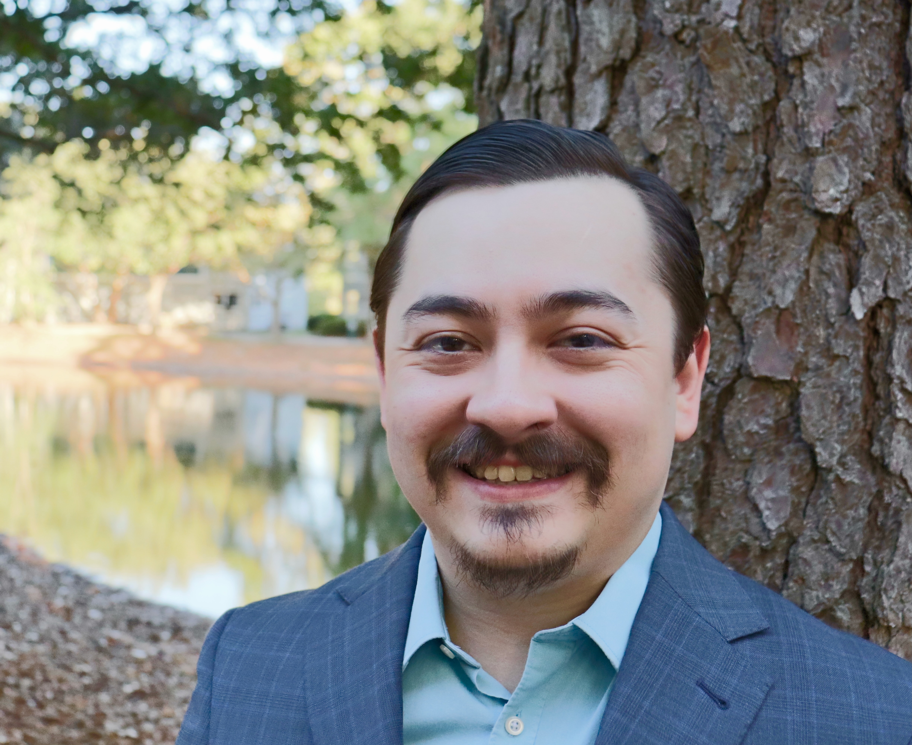

In my career, I am a staff programmer in Peter Bandettini's lab, the Section on Functional Imaging Methods. Most of my work revolves around programming and technical support. For my most up to date work, see my active projects page. Outside of work, I also have a variety of hobbies. I have hobbies that do no favors for programmer stereotypes, like video games and tabletop games, and hobbies that would be very difficult to guess, like collecting fountain pens. I currently live in Charleston, South Carolina, with my wife and two dogs.
